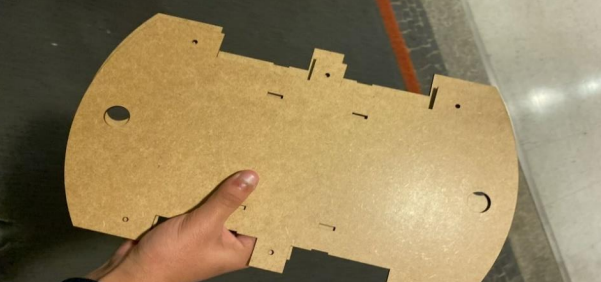
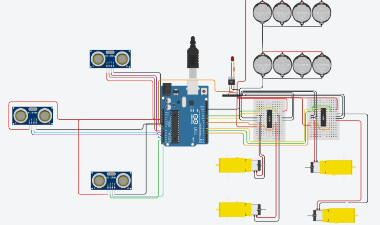
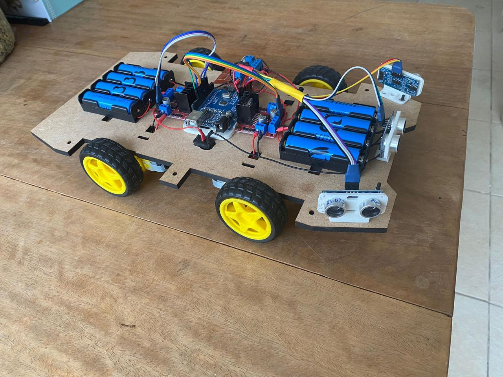
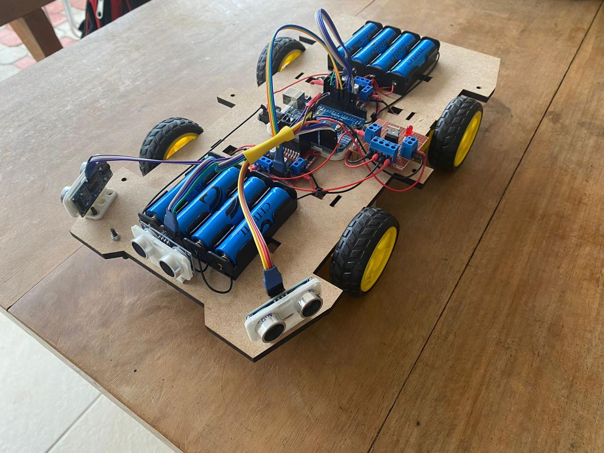

Um veículo autônomo em escala representa um grande avanço tecnológico da área automotiva. É um robô que, por meio de uma combinação de sensores, programas e sistemas de comunicação, são capazes de analisar o ambiente ao seu redor, seguir um trajeto e desviar de obstáculos de maneira independente.
O nosso projeto foi inserido no conceito de Cyberpunk. Desta forma, buscando oferecer uma visão tecnológica que refletisse a complexidade dos ambientes urbanos.
Considerando que o carrinho foi projetado para participar de uma competição de carros autônomos, realizada ao ar livre na AARC do ABC, diversos fatores que simulam um ambiente urbano precisaram ser levados em consideração, tais como o relevo do terreno, as condições climáticas e a limitação de espaço a fim de se obter sucesso na prova.
O nosso projeto foi inserido no conceito de Cyberpunk. Desta forma, buscando oferecer uma visão tecnológica que refletisse a complexidade dos ambientes urbanos.
Considerando que o carrinho foi projetado para participar de uma competição de carros autônomos, realizada ao ar livre na AARC do ABC, diversos fatores que simulam um ambiente urbano precisaram ser levados em consideração, tais como o relevo do terreno, as condições climáticas e a limitação de espaço a fim de se obter sucesso na prova.
Nosso chassi foi projetado no software de modelagem 3D Onshape, e impresso na impressora de corte à laser, em MDF, que oferece a combinação ideal entre leveza e resistência estrutural. Ele permitiu que o chassi suportasse os componentes eletrônicos com estabilidade, além de permanecer resistente durante testes e experimentações.
Arduíno UNO: Atua como cérebro, programado para controlar as ações do robô com base nos sinais recebidos dos sensores. O cabo USB permite conectar a placa ao computador para programá-la, e os pinos facilitam a conexão de outros componentes.
Sensor de Distância Ultrassônico HC-SR04: O sensor ultrassônico detecta os obstáculos na frente do robô. Ele emite ondas ultrassônicas de 40 kHz que ao refletirem em objetos próximos e retornam ao sensor, que envia um pulso ao Arduino, indicando o tempo que a onda levou para ir e voltar e então ao sensor calcular a distância até os obstáculos e desviar deles.
Motor Shield L293D Ponte H: Usado para controlar a direção e a velocidade dos motores. Ele usa a ponte H, que permite que o motor DC gire tanto no sentido horário quanto anti-horário, essencial para o controle do movimento do robô.
Fonte de Energia: O robô é alimentado por uma bateria de 9V, responsável por fornecer energia à placa Arduino, aos motores e aos outros componentes. A conexão é feita através de um plug com saída P4, que liga a bateria diretamente à placa, garantindo um fornecimento de energia confiável. Para ligar e desligar, uma chave gangorra de 2 terminais atua como interruptor principal, controlando o fluxo de energia.
